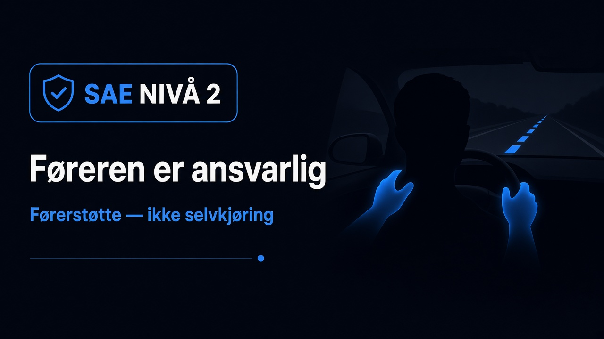
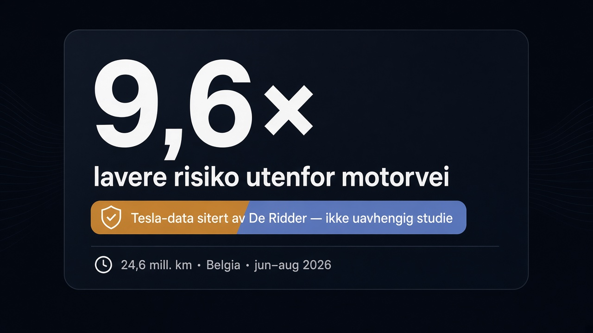
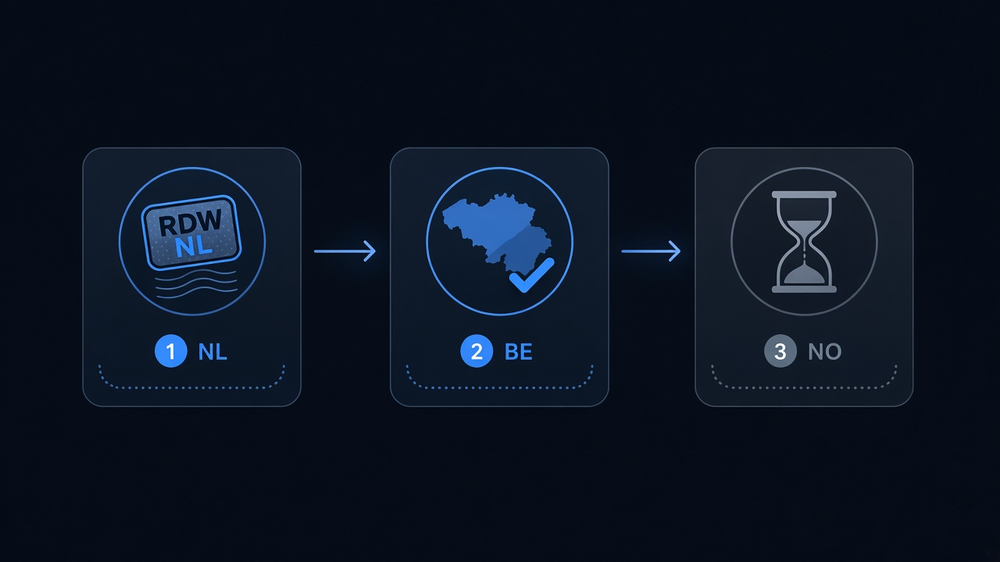

Belgia har FSD-tall — hvorfor står Norge fortsatt utenfor?
Nei — FSD Supervised er fortsatt ikke godkjent for vanlige eiere i Norge. Statens vegvesen åpner ikke for kundekjøring. Det som finnes, er begrenset testing med Tesla-trente sikkerhetsførere. Kundedemonstrasjoner er stanset til Tesla endrer materiell Vegvesenet mener er villedende.
Samtidig har Belgia (via Flandern) hatt kundetillatelse siden juni 2026. I september la flamske mobilitetsminister Annick De Ridder fram sikkerhetstall i det flamske parlamentet — tall hun har fått fra Tesla. De viser blant annet at ulykkesrisikoen utenfor motorvei skal ha vært 9,6 ganger lavere med FSD Supervised enn ved manuell Tesla-kjøring i samme periode.
Forklaringen ligger i godkjenningsmekanismen — ikke i manglende kilometer i Belgia.

Hva De Ridder faktisk sa
Ifølge VRT NWS (17. september 2026) fortalte De Ridder parlamentet at Tesla-biler med FSD Supervised kjørte 24,6 millioner kilometer i Belgia mellom 11. juni og 31. august 2026. Tallene kommer fra Tesla. Hun offentliggjorde dem etter spørsmål fra flere partier.
Hun siterte blant annet:
- Utenfor motorvei: ulykkesrisikoen med FSD påskrudd oppgis som 9,6 ganger lavere enn manuell Tesla-kjøring i samme datasett.
- På motorvei: om lag 30 prosent lavere risiko ifølge samme Tesla-tall.
- Én meldingspliktig ulykke siden tillatelsen — på et tidspunkt der føreren hadde skrudd av FSD ved en rundkjøring.
- Fire svært lette, ikke-meldingspliktige hendelser der myndighetene ifølge De Ridder ikke fant sammenheng med FSD.
HLN og andre medier gjengir mer detaljert kilometertall. Poenget for norske lesere er det samme: dette er produsentdata ministeren siterer, ikke en uavhengig Statens vegvesen-studie.

FSD Supervised er fortsatt SAE nivå 2. Føreren må kunne gripe inn. Det er ikke selvkjøring — heller ikke i Belgia.
Hvordan Belgia fikk det — og Norge ikke
Steg 1: Nederland (RDW) og artikkel 39
10. april 2026 ga nederlandske RDW typegodkjenning for Tesla FSD Supervised med gyldighet i Nederland. Godkjenningen ligger under unntaksregelen i artikkel 39 i forordning (EU) 2018/858: nasjonal myndighet kan gi unntak fra harmoniserte krav for nye løsninger, forutsatt sikkerhet og miljø.
RDW understreker: systemet er førerstøtte, ikke autonomt. Føreren er ansvarlig. EU-bred bruk krever at medlemslandene stemmer i TCMV (Technical Committee on Motor Vehicles).
Steg 2: Nasjonal anerkjennelse — Belgia/Flandern
10. juni 2026 meldte De Ridder at Flandern tillater aktivering av FSD på belgiske veier. Ifølge VRT bygde de på nederlandsk testdata og en kortere testperiode for forskjeller i infrastruktur og vegkode. Føreren forblir ansvarlig.
Det er nasjonal anerkjennelse / tillatelse etter den nederlandske artikkel 39-saken — ikke det samme som et ferdig EU-vedtak for alle 27 land.
Flere EU-land har gjort lignende nasjonale grep. Det endrer ikke automatisk statusen i Norge.

Steg 3: Norge — annen rolle, annen linje
Norge er EØS-land uten stemmerett i TCMV. Statens vegvesen deltar, stiller spørsmål og vurderer norske forhold.
På SVVs infoside (offentlig linje per 3. juli 2026) er statusen klar:
- Ikke kundegodkjent.
- Begrenset testing med Tesla-trente sikkerhetsførere.
- Kundedemoer stanset: Tesla må endre informasjonsmateriell Vegvesenet vurderer som villedende (blant annet fordi det ikke tydelig sier at dette er førerstøtte).
- SVV er kritisk til flere av RDW-unntakene — særlig aktivering utenfor motorvei og unntak knyttet til fartsgrenser og sideveis akselerasjon i kurver. Dette er krav Norge har jobbet for i FN-regulativ 171.
- SVV skriver at potensialet for slik teknologi kan være mindre i land med lav trafikkdødelighet og komplekst vegnett (eksplisitt nevnt: Norge med smale, svingete og glatte veier).
- Neste TCMV-møte er i oktober. Avstemning kan komme da. En konkret dato 6. oktober er rykte (Tesla Europe / trackere) — ikke bekreftet agenda i komitologiregisteret.
Kort sagt: Belgia har valgt nasjonal åpning etter RDW. Norge venter på EU-prosessen og gjør egen sikkerhets- og informasjonsvurdering. De to sporene er ikke det samme.
Hvorfor belgiske Tesla-tall ikke «beviser» norsk kundeja
Tre ting blandes ofte sammen:
- Produsentdata vs. myndighetsvurdering. De Ridders tall er Tesla-rapportering til belgiske myndigheter. SVV har tidligere understreket at informasjonen myndighetene vurderer i unntakssaken ikke er den samme som Tesla publiserer offentlig — og at de vil vurdere om RDWs sikkerhetsberegninger gjelder norske forhold.
- Nasjonal anerkjennelse vs. EU-bred typegodkjenning. Belgisk tillatelse er et nasjonalt steg. EU-bred klarering krever kvalifisert flertall i TCMV (minst 15 av 27 stater og 65 % av befolkningen). Selv et EU-ja er ikke automatisk norsk aktivering samme dag: EØS + SVVs vurdering av sikkerhet og kundeinformasjon står igjen.
- Autopilot ≠ FSD Supervised. Begge er Level 2-pakker. Autopilot (TACC/Autosteer) følger egne spor. Denne saken handler om FSD Supervised — by, rute, mer funksjon under overvåkning.
I tillegg har Speed Offset (fartsmargin) skapt motstand i Europa. Svenske myndigheter har ifølge samtidige rapporter bedt om at funksjonen fjernes eller endres. SVV har selv løftet fart og kurver som norske prioriteringer. Det er en del av hvorfor «tall fra ett land» ikke lukker saken for et annet.
Hva som må skje før norske eiere får det
Uten låst dato — ærlig prosess:
- TCMV behandler den nederlandske artikkel 39-saken. Oktober-møtet kan bli første avstemning (SVV). 6. oktober = rykte.
- Utfall i EU — ja, nei eller utsettelse. Et nei kan også ramme provisoriske nasjonale godkjenninger over tid (rapportert fra flere EU-land; merk presse/sekundær der primær mangler).
- Norge/EØS — SVV tar stilling når EU-avgjørelsen foreligger, med egen vurdering av trafikksikkerhet (inkl. norske forhold) og kundeinformasjon.
- Tesla Norge — eventuelt søknad/aktivering for allerede registrerte biler; ingen offentlig tidslinje.
Belgiske kilometer og De Ridders sitater endrer ikke punkt 1–4. De er relevante som støtteargument i den europeiske debatten — ikke som norsk vedtak.
Kort oppsummert
| Belgia (Flandern) | Norge | |
|---|---|---|
| Kundetillatelse FSD Supervised | Ja, fra juni 2026 (nasjonal) | Nei |
| Grunnlag | Anerkjennelse etter RDW art. 39 + egen test | Venter EU/TCMV + SVV-vurdering |
| Sikkerhetstall i media | Tesla-data sitert av De Ridder (sep. 2026) | Ingen tilsvarende norsk kundeaktivering å måle |
| Stemme i TCMV | Ja (via Belgia/EU) | Nei (EØS) |
Konklusjon: FSD Supervised er ikke godkjent i Norge fordi Statens vegvesen ikke har åpnet for kundekjøring — og fordi den europeiske unntaksprosessen fortsatt pågår. Belgiske tall forklarer hvorfor De Ridder forsvarer den belgiske tillatelsen. De erstatter ikke SVVs linje, og de er ikke en uavhengig norsk sikkerhetsstudie.
Se også norsk status, TCMV-estimat, Europa-nyhetsfeed og historie.